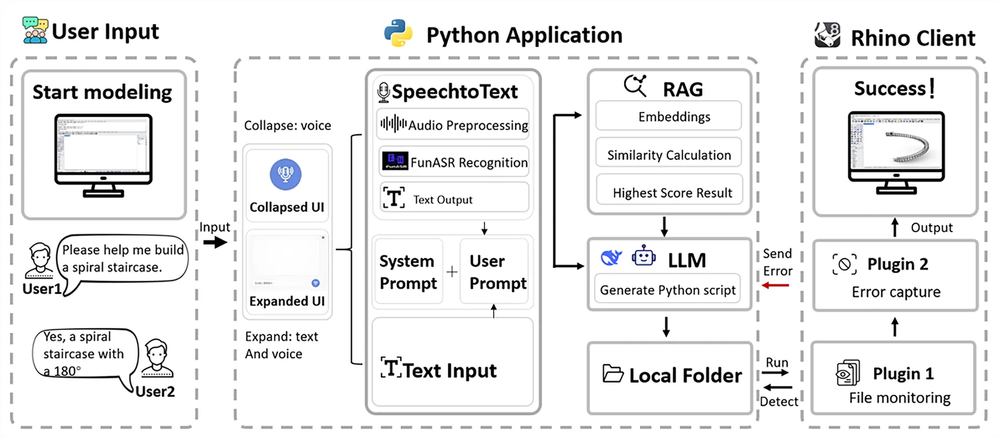
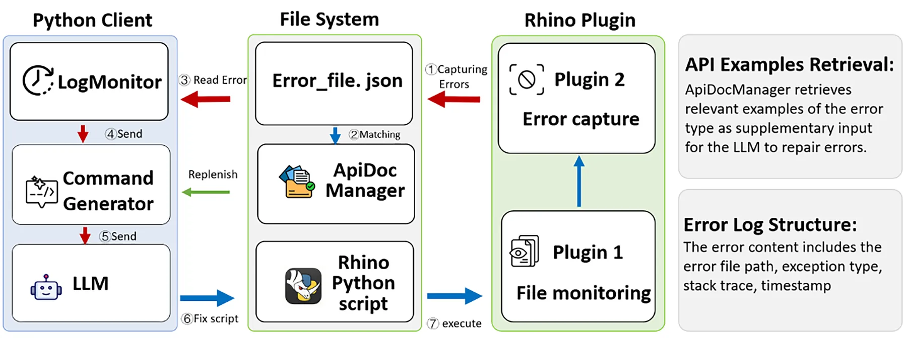
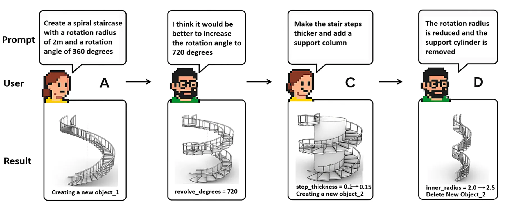
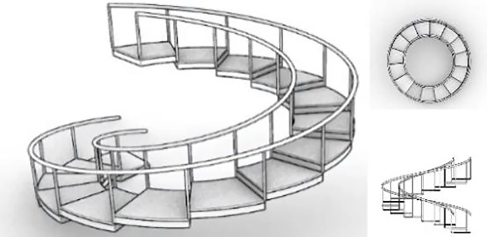

Problem
项目问题
建筑建模命令复杂、脚本门槛高，用户希望通过语音或文本快速完成创建、修改、删除和复杂建模任务。
eCAADe 2025 相关成果
Speech or text becomes Rhino script through ASR, RAG, LLM generation, and plugin execution

建筑师需要更低门槛地把口头意图转化为 Rhino 操作与脚本。
ASR + RAG + LLM 生成脚本，再通过插件执行并记录反馈。
覆盖创建、修改、删除和复杂建模的语音辅助原型链路。
主要参与交互流程、系统链路与测试案例表达。
Problem
建筑建模命令复杂、脚本门槛高，用户希望通过语音或文本快速完成创建、修改、删除和复杂建模任务。
Method
Output
50 条指令试验显示基础与修改任务成功率强，复杂任务自动化耗时相对手工有明显下降，主要瓶颈集中在响应速度。
Gallery


